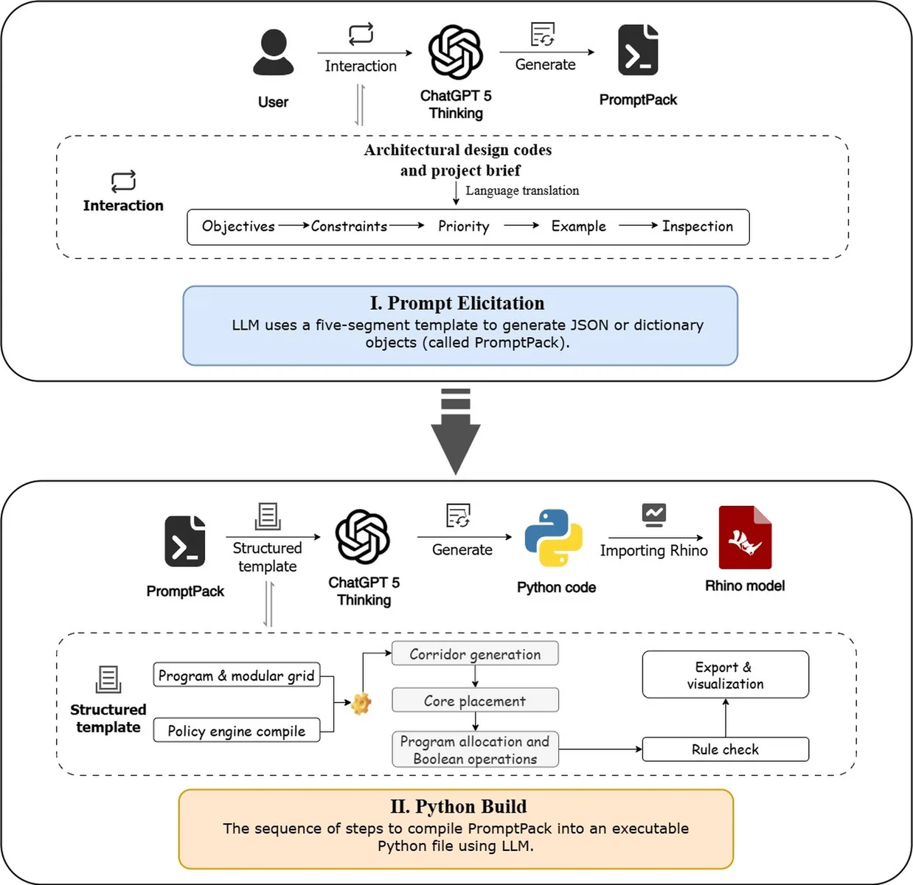
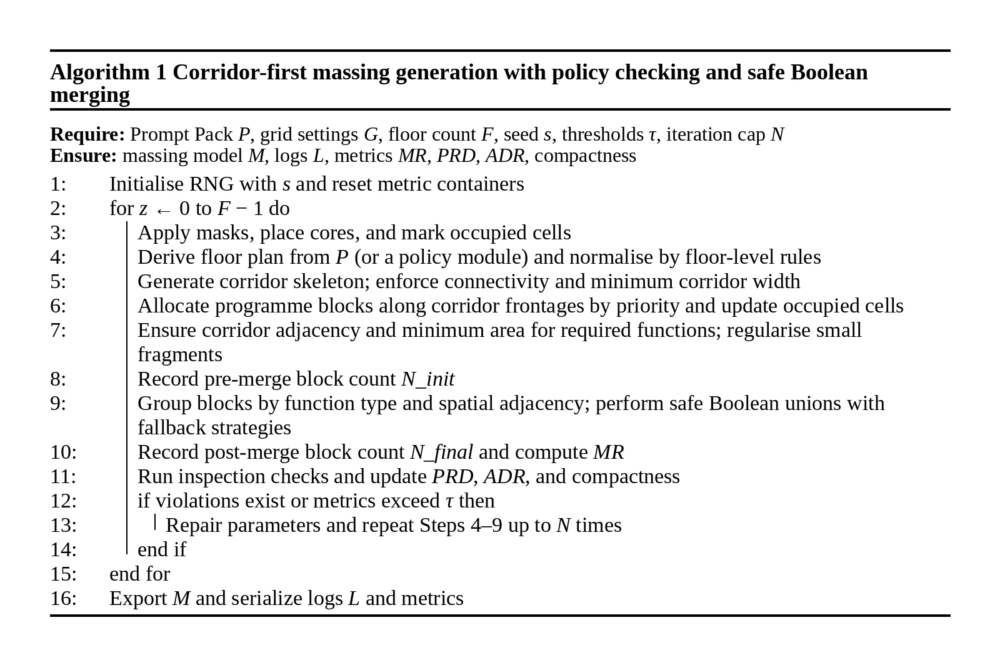
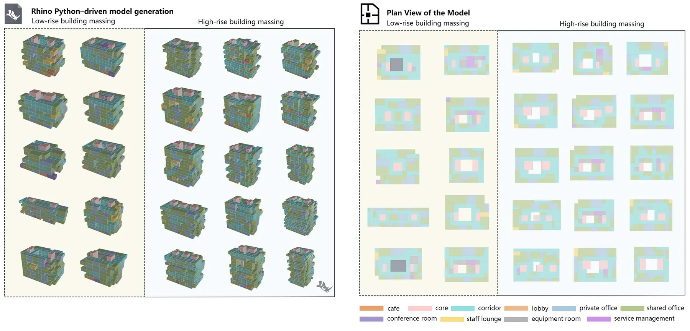

Problem
项目问题
早期办公建筑体量设计依赖人工经验和反复调整，自然语言任务书很难稳定转译为可复现、可审计的几何生成过程。
自然语言设计任务很难直接变成稳定、可复查的建筑体量生成过程。
用五类 Prompt Pack 约束 LLM 输出，并把设计策略落到 Rhino Python。
可运行的体量脚本、指标评估和对比实验结果。
主导方法框架、实验组织和结果表达。
Problem
早期办公建筑体量设计依赖人工经验和反复调整，自然语言任务书很难稳定转译为可复现、可审计的几何生成过程。
Method
Output
形成从自然语言 brief 到可运行体量脚本的 Human-AI Workflow，并把设计知识外化为可检查、可复用的结构化规则。
Gallery


